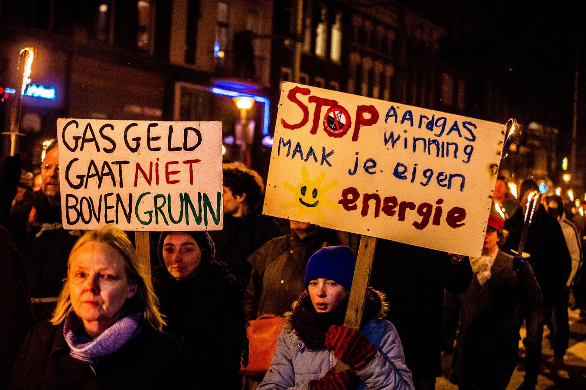

Thijs van der Klein
Menselijke klachten
Aardbevingen hebben niet alleen invloed op gebouwen en andere fysieke objecten, maar kunnen ook een grote invloed hebben op de mensen die het meemaken. Aardbevingen kunnen in het ergste geval zelfs leiden tot een vorm van PTSS (Post Traumatische Stres
Stoornis) (PTSS Voorbij, sd). Dit is allemaal in het scenario dat je het overleeft, want ondanks dat de aardbevingen in Nederland
vrij licht zijn, gaan er jaarlijks toch 16 mensen dood aan de gevolgen van een aardbeving. Dit blijkt uit onderzoek van Rijksuniversiteit Groningen, waaruit ook bleek dat de voornaamste oorzaak stres was, vaak na aanleiding van de
schade die is ontstaan bij de aardbeving (rtvnoord.nl, 2022).
Stres
Zoals in het artikel hierboven van RTV noord, kan een aardbeving ook grote gevolgen hebben op iemands mentale gezondheid, vooral als het frequent gebeurd. De stres kan worden veroorzaakt door de traumatische ervaringen van een aardbeving, maar de groep
die onderzocht is ontwikkelde vooral stres naar aanleiding van de schade die werd veroorzaakt door de aardbeving. Deze stres kan zich ontwikkelen in gezondheidsklachten, zoals depressie, angststoornissen of juist fysieke klachten zoals
hoofdpijn, slapeloosheid, hartkloppingen en maagproblemen. Deze stres wordt veroorzaakt door het moeilijke beleid dat de overheid en de NAM (Nederlandse Aardolie Maatschappij), beide partijen eisen een grote rondslomp aan administratie
en vergoeden alleen het broodnodige, en dat na heel veel moeite. Als er nieuwe schade later ontdekt wordt, begint dit gehele verhaal opnieuw. De schijnende situatie die hierdoor ontstaat, zoals het niet kunnen leven in je huis, en
de uitzichtloosheid zorgen er beide voor dat veel mensen in Groningen stresproblemen ontwikkelen (RTV Noord, 2022).

Afbeelding 1
Groningse protesten tegen aardgasboringen
Effecten bij kinderen
Er leven ongeveer 30 duizend kinderen in het aardbevingsgebied, de gevolgen voor de opgroeiende generatie zijn van grote invloed op hun verdere leven, kinderen kunnen angstig worden voor de bevingen en gespannen raken door bijvoorbeeld verhuizingen, langdurige
onzekerheid, de aanwezigheid van vaklieden in huis of de veranderingen in de buurt. Daarnaast voelen ze de stress en zorgen die jij hebt feilloos aan. Als kinderen zorgen hebben, dan uiten zij dit vaak anders dan volwassenen. Ze krijgen
bijvoorbeeld hoofd- en buikpijn of problemen met hun gedrag, met concentreren en leren. Ook kunnen ze in bed gaan plassen en slechter gaan slapen. Andere kinderen trekken zich terug of proberen extra lief te zijn. Elk kind uit zijn
zorgen anders. Praat met en luister naar je kind. Vraag door wat er aan de hand is. Als je er zelf niet uitkomt, neem dan contact op met GGD Groningen (GGD Groningen, 2021).
Ook kunnen ze last hebben van nachtmerries, boos of verdrietig worden, en een deel geeft zelfs aan de overheid te wantrouwen, "Omdat ze het gevoel hebben dat die geld belangrijker vindt dan hun veiligheid", zegt onderzoeker Elianne
Zijlstra (nos.nl, 2019).